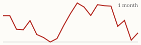
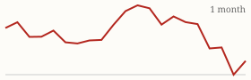

| Today's briefing for operators |
Top line: Partners, not marketing spend, are filling one operator's pipeline |
|
| Tuesday, October 20, 2026 | Late Edition | Curated from 63 voices on X |
|
Real Estate
15 Deals a Month With Zero Marketing Spend
Cole Ruud-Johnson describes a founder with no online brand who closes about 15 off-market deals a month, all sent to him by agents, wholesalers and joint-venture partners.
By @coleruudjohnson |
Cole Ruud-Johnson says one client's latest deal was a 19-unit building about $1,000,000 under market value, and that the deals close within 30 days with no money spent on marketing. The engine is two funnels run well: one aimed at agents and one aimed at joint-venture partners who bring him opportunities every week. |
Jacob Naviaux made a similar point the same day: of the 500+ deals he has bought and sold, fewer than 20 came straight from a seller. For a CEO, the takeaway is that relationships with people who already find deals can be a cheaper, steadier source of inventory than paid lead lists, and they deserve their own owner, process and scorecard. |
|
| Read on X |
|
Mortgage Rates & Markets | Mortgage Rates Today's average lender rates | 30-year fixed | 7.43% | +0.06 | | 15-year fixed | 7.07% | +0.03 |
Daily change vs. prior day. Source: Mortgage News Daily, as of 10/19/2026 (updated weekdays about 4 PM ET). |
|
S&P 500 Close of Mon, Oct 19 S&P 500 7,690.73 ▲ +31.29 (+0.41%)  Yahoo Finance chart data (daily closes) |
|
Nasdaq Composite Close of Mon, Oct 19 Nasdaq Composite 26,430.89 ▲ +290.86 (+1.11%)  Yahoo Finance chart data (daily closes) |
|
| Real Estate & Deals | Why Buyers Back Out of Deals By @Jacob_Naviaux Jacob Naviaux lists the three big ones: buyers start doubting the ARV, their contractors find a bigger rehab after earnest money goes hard, or their lender cuts the loan after underwriting. All three are worth screening for before you assign a contract. Read on X |
One $10 Caller or Two $5 Callers? By @NickMaccini Nick Maccini asked which performs better: one cold caller who sounds fully American at $10 an hour, or two overseas callers at $5 an hour each. The useful answer comes from your own numbers, measured as appointments and contracts per dollar rather than dials. Read on X |
Nick Gerli's chart of Manhattan home values. Image via @nickgerli1 on X Manhattan Was the Decade's Worst Housing Market By @nickgerli1 Nick Gerli says New York County values fell 11.9% from September 2016 to 2026, about 51% after inflation, though they are up 3% over the last year. It's a reminder that famous, expensive markets aren't automatically safe ones. Read on X |
Time Kills Deals and Profits By @NickMaccini Nick Maccini, with a wholesale deal finally closing after a long wait, says he'd rather take $10K now than $60K in six months, because the bigger, slower payday usually shrinks. Read on X |
| AI Briefing | DeepSeek Open-Sources Its Inference Engine By @deepseek_ai DeepSeek released DeepInfer, the production system that runs DeepSeek-V4.1-Flash, as open source, aiming to lower the cost of running AI models. Read on X |
Meta's Muse Glimmer announcement graphic. Image via @AIatMeta on X Meta's Muse Glimmer Runs on One Consumer GPU By @AIatMeta Meta published a report on Muse Glimmer, a 30B open-weight model built for agent tasks that runs at practical speeds on a Mac or PC with a single consumer graphics card. Read on X |
Hand Off Your Most Boring Browser Task By @alliekmiller Allie K. Miller suggests picking a dull 20-minute weekly browser task, giving it to a computer-use agent, recording it as a skill and correcting it over a few runs. Any paid tool without an API can now be operated by an agent. Read on X |
DM Automations Built Inside ChatGPT By @Sabrina_Ramonov Sabrina Ramonov connected Blotato to ChatGPT and had it build Facebook and Instagram comment-keyword DM automations. She says to double-check the keyword, link and message before switching one on. Read on X |
Don't Outsource Your Judgment to AI By @PeterDiamandis Peter Diamandis worries less about AI replacing people than about people becoming so dependent on it that they stop questioning its answers. AI should extend your thinking, not replace it. Read on X |
| Business & Leadership | Raise the Bar for Your Team By @LeilaHormozi Leila Hormozi says most leaders hit a ceiling because they're afraid to raise standards, not because they lack skill. A higher bar gives your people more room to grow, and a low one keeps their opportunities small. Read on X |
Pick One Game and Stay in It By @coleruudjohnson Cole Ruud-Johnson notes that the top 20% of brokers and investors do 80% of the volume. His rule is to choose a business that can reach your goals and stick with it for 10+ years, because every pivot resets the clock. Read on X |
Plan for Harder, Longer and Pricier By @AlexHormozi Alex Hormozi says everything is harder, takes longer and costs more than you expect, and it's still worth it. Build that cushion into timelines and budgets up front. Read on X |
|
The Hyre Times is compiled each morning by Groky from public posts on X plus public rate and market data. Summaries reflect the authors' own claims and have not been independently verified. Not financial advice. © 2026 Hyre Times. |
|